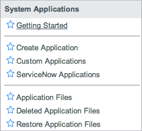
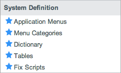

Applications - Versions Prior to Fuji
1 Overview
Applications represent packaged solutions for delivering services and managing business processes. The ServiceNow platform offers several standard applications, such as Incident, Problem, and Change. Administrators can also develop and manage custom applications to meet business needs. When building applications on the ServiceNow platform, developers can take advantage of existing platform features such as security access controls, workflow, reporting, and notifications as well as existing public data such as user and task records.
Applications have changed significantly with the Fuji release. For the most current version, see Applications instead.
2 Parts of an Application
{kind=link}
An application consists of the following components:
2.1 Custom Application Record
The custom application record defines and identifies an application and all of its associated artifacts. It is similar to a system dictionary record for a table or column in that it stores the most current configuration of an application.
A custom application record tracks all the configuration records associated to a particular application, and each configuration record is only assigned to one application at a time. When you are ready to publish an application, you can create an update set containing only the most recent versions of the application configuration records.
For more information, see Creating Custom Applications - Versions Prior to Fuji.
2.2 Application Data Tables
Data tables store application-specific data and provide a UI for users to access this data. Application developers create data tables and their associated lists and forms for application users to add and update records. An application owns its data tables and determines whether other applications can access resources from these tables. For example, the Book Rooms application might store conference room data in the Conference Rooms [u_conference_rooms] table.
The system controls access to data tables from the user interface using standard access control rules. By default, the application creation process restricts access to application data tables by requiring users to have an application-specific user role.
2.2.1 User Interface Elements
The system automatically creates a list and form view for each application data table. Application developers can use the standard system processes to lay out these lists and forms to add views, fields, and sections as needed. They may also want to create custom menus, modules, or UI pages to allow users to find, add, and modify the information they need. See Administering Application Menus and Modules or UI Pages.
2.2.2 Application User Roles
Application developers can create application-specific user roles to control access to application data. By default, application developers can create an end user role for the primary users of a custom application. The system automatically creates the following configuration records to restrict access to application data:
- Standard record operations on application tables are restricted to the application user role or the admin role.
- Create
- Read
- Write
- Delete
- The application menu is restricted to the application user role or the admin role.
- All application modules are restricted to the application user role or the admin role.
Application developers can create additional user roles as needed to support the application data model but must manually create any associated access controls, menu role requirements, or module role requirements.
2.2.3 Web Services Integrations
Application developers can create web service integrations to application data tables.
2.3 Application Files
Application files are configuration records that allow application designers to extend application functionality. Application developers create application files when they add application logic such as business rules, workflows, and script includes. An application does not own the application file tables it uses; rather it owns the records (files) within these tables. For example, adding a business rule to check for available rooms from the Conference Room table adds an application file to the Business Rule [sys_script] table. Application designers can view the complete list of application files from the custom application record.
See Application Files - Versions Prior to Fuji.
3 Development Environment
The platform provides a development environment that:
- Displays the currently selected application.
- Identifies any resource conflicts between the currently selected record and the currently selected application.
3.1 Application Picker
The application picker allows application developers to view and select the application where their changes apply. The application picker is available under the gear icon in the banner frame starting with the Eureka release. In previous versions, it is available directly in the banner frame.
{kind=link}
3.2 Conflict Detection
A conflict exists when application files that normally belong together are not assigned to the same application. The system displays a notification when the application file you changed or its parent is not assigned to the application selected in the application picker. For example, a conflict is detected in this scenario.
- Table A is associated with Application A.
- Application B is selected in the application picker.
- You create a new field on Table A.
{kind=link}
3.3 Application Versioning
Each installed application has a version as defined by its application developer in the custom application record. Application developers can use the version to identify the most recent changes to distribute other instances.
4 Managing Applications
Application developers can manage applications by:
- Distributing them to other instances
- Removing them
For more information about managing applications, see Managing Applications - Versions Prior to Fuji.
4.1 Distributing Applications
Administrators can publish an application to an update set to make it available to any instance with access to the update set file. Typically, administrators create an update set to transfer the latest application version to a test or production environment. They may also want to save a version of an application for compliance or backup reasons.
For more information about distributing an application with an update set, see Publishing Applications - Versions Prior to Fuji.
4.2 Removing Applications
Administrators have the following options to remove unwanted applications:
- Delete applications during development.
- Deactivate applications and retain their data.
For more information about removing applications, see Managing Applications - Versions Prior to Fuji.
4.3 ServiceNow Applications
Administrators can see active and available baseline applications from the list of plugins. Application developers cannot directly modify applications provided by ServiceNow in the same way they can custom applications. Typically, they only activate applications or create necessary configuration records for their custom applications in existing application tables.
The system has an application record for every active plugin on an instance (starting with the Dublin release). ServiceNow applications have the following characteristics:
- Every application file installed with a plugin is automatically assigned to the corresponding application.
- You cannot add application files to a ServiceNow application.
- ServiceNow applications are not available in the application picker or the Move to application dialog box.
- Some ServiceNow applications are installed by plugins and system directories that do not appear on the list of plugins. For example, a plugin that is available only by request.
To view a list of the trackable ServiceNow applications that are activated on the instance, navigate to System Applications > ServiceNow Applications. You can use the following fields to filter for ServiceNow applications.
| Field | Description |
|---|---|
| Vendor | [Read-only] Lists the vendor that created the application. The value is ServiceNow if the application was installed by a plugin. The field is empty for custom applications. |
| Code | [Read-only] Stores the plugin ID for an application that was installed by a plugin. The field is empty for custom applications. |
| Trackable | Indicates whether a ServiceNow application is tracked for licensing and analytics. The usage analytics feature provides data collection, auditing, and reporting for trackable ServiceNow applications and all custom applications.
In the Dublin release, the field label is Licensable. |
| |
Note: These fields are not available on the application form or list by default. You can configure the form or list layout to add them, if desired. |
5 Menus and Modules
Use these modules to access common features for building and managing custom applications.
|  | Under the System Applications menu:
|
|  | Under the System Definition menu:
|
{kind=link}
{kind=link}
6 Enhancements
6.1 Eureka
- Stores a user-defined version number for use when creating and publishing applications.
- Changes the field label in the Application table from Licensable to Trackable.
6.2 Dublin
- Provides an application record exists for every active plugin on an instance. Every application file record installed with a plugin is automatically assigned to the corresponding application.
- Includes choice list options as part of an application through records in the Choice Set table, which have an associated application file. This feature allows you to add field choices to an application when the table exists in another application (for example, choices for a field on the Incident table). See Customizing Choice Lists.
- Allows administrators to add homepages and content pages to an application.
- Allows administrators to restore deleted applications, tables, and fields along with all descendant records by clicking a related link on the deleted application file form.
- Ensures data integrity by preventing the deletion of tables that are extended by a table in another application.
- Provides a Restore Application Files module to list the application files of deleted records that you can restore.
- Provides a Custom Applications module to replace the Applications module.
- Provides Related Record Versions and Related Record Updates related lists on the application file record to show the version and update records for the related configuration record.
- Provides the Customer update and Replace on upgrade fields on an application file record to indicate whether the related record has customer changes and whether it will be upgraded to the next software version. When you pull versions from a parent instance, these fields are kept in sync to ensure that the same records are replaced during software upgrades of parent and child instances. See Team Development.